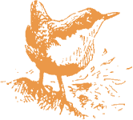

|
|
Summer 1997:
The following article was written by Martin Calvert and originally printed in the RSPB Leeds Local Group Newsletter). It has been reproduced with his permission.
The Gledhow Valley nestbox scheme is now in its 9th year. Currently there are 73 nestboxes in place in the woodland either side of Gledhow Valley Road, 69 of which are standard hole nestboxes.
This is the story of the 1997 season. In my experience birds start investigating holes seriously in January/February and keep returning to their chosen holes regularly, by they natural or nestbox, until nest building begins in late March/early April.
This year the first eggs were laid around April 10th and the last ones around May 16th, which in turn led to the fist eggs hatching around April 24th and the last on May 30th. The first juveniles to fly from the boxes left on the 14th May and the last on June 20th.
57 out of 69 boxes witnessed some sign of breeding. 6 of these had only a nest o nest material in them. Ine boc had a complete nest and cup complete with a dead adult great tit. So, 50 boxes had eggs laid in them, consisting of 37 pairs of blue tits and 13 pairs of great tits.
Monitoring the progress of the boxes requires about ten 2 hour visits between the end of April to the middle of June and then the boxes have to be cleaned out at some stage. This can be an unpleasant task, but has to be done as studies have shown that birds prefer a clean nestbox to one containing an old nest and the parasites that go with it.
This year 5 of the 50 boxes that had eggs laid in them failed - 4 broods died, presumably after a parent bird went missing and one clutch of eggs was also deserted, they were fertile.
So this left 45 boxes that successfully produced young tits, 34 broods of blue tits and 11 broods of great tits. The clutch sizes of blue tits ranged from 2 to 12, with an average of 8 per box, a total of 272 from 34 boxes. The clutch size of great tits ranged from 2 to 12 with an average of 5.6 per box, a total of 62 from 11 boxes.
Every year there are some failures and 5 out of 30 is about average. The pre-breeding population of blue tits and great tits must number around 160 and 60 birds respectively.
Some pairs of great tits always seem to struggle to raise a full brood and this year 3 pairs ended up with 2 or 3 juveniles only from 7 hatchlings, the unfortunate birds dying at about 10 days old.
One clutch of blue tits contained a runt, being at least 5 days behind its siblings. How this bird fared when it left the nestbox is open to conjecture.

Most year some boxes get smashed or knocked down by persons unknown. As long as this happens outside the breeding season then the boxes are rebuilt and those sites no longer used. Very occasionally boxes containing nest/eggs/young birds are knocked down. This happened 4 times in 9 years and is most distressing. This year so far no boxes have been vandalised.
Occasionally boxes are predated by squirrels or woodpeckers. Firm roof fastening and metal entrance surrounds deters all but the most determined intruder, however a woodpecker would still be able to get in. I have had only one instance of nestlings being drilled out, possibly due to the fact of there being only 2 pair of great spotted woodpeckers in Gledhow Valley woods.
One year, a squirrel, I think, managed to get 3 lids off 3 boxes in a very small area of the woods and all 3 broods disappeared. There has been no re-occurance of this problem.
Many other creatures can be found in the nestboxes. When there are dead bodies in the boxes, there is usually a wriggling mess of maggots to contend with. This year I found a burying beetle (a beetle that buries birds bodies) in the box that contained 3 bodies.
Spiders, woodlice, earwigs, centipedes, slugs and a whole host of flies, fleas etc. are common. Bees sometimes take over a box destroying nest and eggs in the process. Towards the end of autumn, moths take to the boxes, with up to 6 large moths in some.
So far the boxes have produced over 2,300 young blue and great tits and has met a demand for nest holes that the woods on their own were not providing.
Please will somebody now tell the pied flycatchers the way to Gledhow Valley.
To see how successful the nestboxes have been from the start of the scheme to the present day, please see the Nestbox Records for Gledhow Valley page. If you have any information, stories, pictures or memories you would like to contribute to this section of the web site, please contact us.
|
| ||||||
 | ||||||||